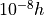
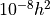
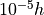

pydfnworks: dfnFlow
DFN Class functions used in flow simulations (PFLOTRAN and FEHM)
Running Flow : General
- set_flow_solver(self, flow_solver)[source]
Sets flow solver to be used
- Parameters:
self (object) – DFN Class
flow_solver (string) – Name of flow solver. Currently supported flow sovlers are FEHM and PFLOTRAN
Notes
Default is PFLOTRAN
- dfn_flow(self, dump_vtu=True, dump_h5=False, dump_vtk=None)[source]
Run the dfnFlow portion of the workflow
- Parameters:
self (object) – DFN Class
dump_vtu (bool) – If True (default), convert PFLOTRAN’s VTK output into XML .vtu files and a .pvd time series in pflotran_vtu_outputs/ with parse_pflotran_vtk. If False, skip the conversion.
dump_h5 (bool) – If True, convert PFLOTRAN’s HDF5 output (<base>.h5) into .vtu/.pvd files in pflotran_vtu_outputs/ with parse_pflotran_h5. The deck must request HDF5 output. If False (default), skip it.
dump_vtk (bool) – Deprecated name of dump_vtu.
Notes
Information on individual functions is found therein. Both converters write <base>-NNN.vtu and <base>.pvd, so if dump_vtu and dump_h5 are both True the HDF5 conversion overwrites the VTK one. Open pflotran_vtu_outputs/<base>.pvd in ParaView.
- create_dfn_flow_links(self, path='../')[source]
Create symlinks to files required to run dfnFlow that are in another directory.
- Parameters:
self (object) – DFN Class
path (string) – Absolute path to primary directory.
- Return type:
None
Notes
Typically, the path is DFN.path, which is set by the command line argument -path
Currently only supported for PFLOTRAN
Running Flow: PFLOTRAN
functions for using pflotran in dfnworks
- lagrit2pflotran(self, dim=3, boundary_cell_area=None)[source]
Take output from LaGriT and process it for use in PFLOTRAN.
Calls
zone2ex(),dump_h5_files(), andcorrect_uge_file(), forwardingdimto the latter.- Parameters:
self (object) – DFN Class.
dim (int) – Problem dimension,
3(default) or2, forwarded tocorrect_uge_file().boundary_cell_area (double) – Boundary cell area. Defaults to
None, in which case1 / self.his used.
- Return type:
None
Notes
correct_uge_filesetsself.uge_fileto the active mesh, so it does not need to be assigned manually after this call.
- zone2ex(self, zone_file='', face='', boundary_cell_area=0.1)[source]
Convert zone files from LaGriT into ex format for LaGriT
- Parameters:
self (object) – DFN Class
zone_file (string) – Name of zone file
Face (Face of the plane corresponding to the zone file)
zone_file – Name of zone file to work on. Can be ‘all’ processes all directions, top, bottom, left, right, front, back
boundary_cell_area (double) – should be a large value relative to the mesh size to force pressure boundary conditions.
- Return type:
None
Notes
the boundary_cell_area should be a function of h, the mesh resolution
- write_perms_and_correct_volumes_areas(self)[source]
Write permeability values to perm_file, write aperture values to aper_file, and correct volume areas in uge_file
- Parameters:
self (object) – DFN Class
- Return type:
None
Notes
Calls executable correct_uge
- dump_h5_files(self)[source]
Write permeability values to cell ids and permeability values to dfn_properties.h5 file for pflotran.
- Parameters:
self (object) – DFN Class
- Return type:
None
Notes
Hydraulic properties need to attached to the class prior to running this function. Use DFN.assign_hydraulic_properties() to do so.
- pflotran(self, transient=False, restart=False, restart_file='')[source]
Run PFLOTRAN. Copy PFLOTRAN run file into working directory and run with ncpus
- Parameters:
self (object) – DFN Class
transient (bool) – Boolean if PFLOTRAN is running in transient mode
restart (bool) – Boolean if PFLOTRAN is restarting from checkpoint
restart_file (string) – Filename of restart file
- Return type:
None
Notes
Runs PFLOTRAN Executable, see http://www.pflotran.org/ for details on PFLOTRAN input cards
- pflotran_cleanup()[source]
Concatenate PFLOTRAN output files and then delete them
- Parameters:
self (object) – DFN Class
index (int) – If PFLOTRAN has multiple dumps use this to pick which dump is put into cellinfo.dat and darcyvel.dat
filename (string) – name of file to be concatenated
- Return type:
None
Notes
Can be run in a loop over all pflotran dumps
- parse_pflotran_vtk(self, binary=True)[source]
Convert PFLOTRAN VTK output into XML VTK (.vtu) files and a ParaView time series (.pvd).
- Parameters:
self (object) – DFN Class
binary (bool) – If True (default), data arrays are base64-encoded binary. If False, they are written as ASCII.
- Return type:
None
Notes
PFLOTRAN writes
<base>-NNN.vtkfiles that contain only cell data for its control volumes, which are the nodes of the DFN mesh. Each snapshot is written topflotran_vtu_outputs/<base>-NNN.vtuwith the mesh fromself.inp_fileand the PFLOTRAN fields as point data (plus the fracturematerial_idas cell data). Velocity files (<base>-vel-NNN.vtk) are merged into the matching snapshot.pflotran_vtu_outputs/<base>.pvdlists the snapshots with their simulation times in seconds, read from the PFLOTRAN log<base>.out. If the log is missing, the snapshot number is used. Open the.pvdfile in ParaView.The original PFLOTRAN
.vtkfiles are removed.
- parse_pflotran_h5(self, h5_file='', binary=True, grid_vtk_file='')[source]
Convert PFLOTRAN HDF5 output into XML VTK (.vtu) files and a ParaView time series (.pvd).
- Parameters:
self (object) – DFN Class
h5_file (string) – Path to the PFLOTRAN HDF5 output file. If empty, defaults to
<local_dfnFlow_file stem>.h5in the current directory.binary (bool) – If True (default), data arrays are base64-encoded binary. If False, they are written as ASCII.
grid_vtk_file (string) – Deprecated and ignored. The mesh is read from
self.inp_file.
- Return type:
None
Notes
Each time group of the HDF5 file (e.g.
' 1 Time 1.00000E+02 d') becomespflotran_vtu_outputs/<base>-NNN.vtu. Every dataset with one value per mesh node is written as point data; datasets with three values per node are written as vectors. Others are skipped.pflotran_vtu_outputs/<base>.pvdlists the snapshots with the times from the group names, converted to seconds.
PFLOTRAN output can be written as VTK or HDF5. dfn_flow(dump_vtu=True, dump_h5=False) controls which is converted after the run. Both parse_pflotran_vtk and parse_pflotran_h5 write one XML .vtu file per output time and a .pvd time series into pflotran_vtu_outputs/. Open pflotran_vtu_outputs/<base>.pvd in ParaView.
The simulation times in the .pvd file are in seconds. For VTK output they are read from the PFLOTRAN log (<base>.out); for HDF5 output they come from the HDF5 time group names. Data arrays are base64-encoded binary by default; pass binary=False for ASCII.
Note
parse_pflotran_vtk_python, inp2vtk_python, dfn_flow(dump_vtk=...), and the vtk_file constructor argument are deprecated aliases of parse_pflotran_vtk, inp2vtu, dump_vtu, and vtu_file. They now write XML .vtu files.
Mesh Geometry Checks (UGE)
Before PFLOTRAN runs, the explicit unstructured grid file (full_mesh.uge) is scanned for invalid cell volumes and connection areas (negative, NaN, or infinite). Such values can appear when the mesh is built with relaxed constraints (rFram), mostly in dense networks and near triple intersections.
Two kinds of small values are not counted as invalid:
Round-off. Values within

of zero for connection areas (
for cell volumes) are zero to working precision and are left unchanged without a message.Degenerate Voronoi edges. When the four nodes around a triangle edge are cocircular, the dual Voronoi edge has zero length and LaGriT can return a tiny area of either sign. Connection areas within

of zero are accepted as zero, left unchanged, and listed in the log as warnings, one line per connection. This can happen in fully conforming meshes, with rFram off.
Values more negative than these tolerances, and NaN or infinite values, are invalid. The following policy is applied to them:
rFram off and any invalid value: the run stops with an error. A conforming mesh should not produce invalid coefficients.
rFram unknown (no parameter file was parsed, e.g., a flow-only restart) and any invalid value: the run stops and asks for
DFN.r_framto be set.More than 1% of the cells or more than 1% of the connections invalid: the run stops, regardless of rFram.
Otherwise: negative values are replaced by their absolute value, non-finite values by the smallest positive value, and every corrected cell and connection is written to the log.
For dim=3 (default) the corrected volumes and areas are multiplied by the fracture aperture and written to full_mesh_vol_area.uge. For dim=2 the aperture conversion is skipped.
UGE-correction utilities for dfnWorks / PFLOTRAN.
All functions that read, validate, and correct an explicit-unstructured-grid
.uge mesh file live in this module. The shared validity rule is: a value is
replaced by its absolute value if negative, by a fill value if it is NaN or
+/-inf, and otherwise left unchanged.
“Negative” is judged against a round-off tolerance, not against exactly zero.
LaGriT computes the Voronoi coefficients in double precision, and a connection
whose true area (or a cell whose true volume) is zero comes back as a value of
either sign at the level of eps * L * h (L the domain size, h the
mesh resolution), typically 1e-16 to 1e-13. Such a value is zero to working
precision and is treated as valid: it is neither flagged, corrected, nor used as
a fill candidate, exactly like an entry of 0.0. The tolerance is
ROUNDOFF_REL times h for connection areas (a length in the raw file)
and times h**2 for cell volumes (an area in the raw file); when h is not
known the absolute ROUNDOFF_ABS is used for both. See
roundoff_tolerances(). A value below -tolerance (e.g. -1e-3) is a
genuine negative and is handled exactly as before.
A second, larger tolerance applies to connection areas only. A connection area
in the raw file is the length of the Voronoi edge dual to a triangle edge, which
is L/2 * (cot a + cot b) for the two angles a and b opposite that
edge. When the four nodes around the edge are cocircular (a + b = 180) the
edge has zero length and both diagonals of the quad are Delaunay; LaGriT’s
connect/recon in-circle test has its own tolerance, so a quad that is
cocircular to within that tolerance may keep either diagonal and the computed
length comes out as a tiny value of either sign, typically 1e-7 to 1e-5
times h (far above floating-point round-off, far below the shortest real
Voronoi edge). This happens in perfectly conforming meshes, in the smoothed
interior of a fracture, with rFram off. Such a value is classified as a
degenerate edge rather than an invalid coefficient: it is accepted as zero and
left unchanged, but unlike round-off it is listed in the log, one line per
connection. The tolerance is DEGENERATE_REL times h
(DEGENERATE_ABS when h is unknown); see
degenerate_tolerance(). Cell volumes get no such tier: a Voronoi cell of
a conforming mesh has no near-zero-area configuration of this kind.
Correcting a bad value is only defensible when the mesh is almost conforming.
Degenerate cells are an artifact of the relaxed meshing constraints used by rFram
(see pydfnworks.dfnGen.meshing.mesh_dfn), and they show up mostly in dense
networks and around triple intersections. So the module enforces a policy before
it corrects anything:
rFram off and any invalid value -> hard error. A conforming mesh has no business producing negative or non-finite coefficients; that is a meshing failure, not an artifact to paper over.
rFram unknown (
DFN.r_fram is None, i.e. no parameter file was parsed, as on a flow-only restart) and any invalid value -> hard error asking for it to be set. “Unknown” must not quietly become “off” or “on”.more than
BAD_FRACTION_LIMITof the cells or of the connections invalid -> hard error, regardless of rFram. The two fractions are tested independently against their own totals.otherwise -> correct, and log every offending cell and connection.
Contents
- roundoff_tolerances, degenerate_tolerance, classify_fix, scan_uge, scan_fills
Low-level helpers implementing the round-off and degenerate-edge tolerances, the validity rule, the mesh-wide scan, and the fill estimate.
- fix_uge_volumes, fix_stream
Byte-faithful fixer: a clean file round-trips unchanged, and only the corrected lines are rewritten.
- correct_uge_file
dfnWorks method.
dim=3aperture-convertsfull_mesh.ugeintofull_mesh_vol_area.uge;dim=2keepsfull_mesh.uge. The mesh is always scanned and the policy above is always enforced.- lagrit2pflotran
dfnWorks method. Forwards
dimtocorrect_uge_file().
- correct_uge_file(self, dim=3)[source]
Correct the LaGriT
.ugefile for the PFLOTRAN flow solver.Always runs. The behaviour splits on two independent axes:
dimcontrols the aperture conversion and the output target.dim=3multiplies cell volumes by aperture and connection areas by the mean aperture, writing<inp>_vol_area.uge.dim=2keeps the raw<inp>.ugeas the active mesh (no aperture conversion).the mesh is always scanned for invalid coefficients first, and
_report_scan()decides what happens. Every offending cell and connection is written to the screen and the log. A correction (negative -> abs, NaN/inf -> smallest positive fill, applied before any aperture scaling) is only made whenself.r_framis True and fewer thanBAD_FRACTION_LIMITof the cells and of the connections are invalid. Otherwise the run exits with an error. Values within the round-off tolerance (roundoff_tolerances()ofself.h) and connection areas within the degenerate-edge tolerance (degenerate_tolerance()) count as zero, not as invalid, in every branch, and are written out unchanged.
In all cases
self.uge_fileis set to the file PFLOTRAN should read.- Parameters:
self (object) – DFN Class.
dim (int) – Problem dimension,
3(default) or2.
- Return type:
None
Notes
- Assumes the following instance variables exist:
self.flow_solver(str): must be"PFLOTRAN".self.inp_file(str): used to derive the.ugefile name.self.r_fram(bool): whether the feature-rejection mesher was used.self.h(float): mesh resolution, for the round-off tolerance (falls back toROUNDOFF_ABSwhen not a number).self.material_ids(list[int]): material id per cell.self.aperture(list[float]): aperture per cell or material.self.cell_based_aperture(bool): aperture indexing mode.self.print_log(callable): logging method.
Running Flow: FEHM
- correct_stor_file(self)[source]
Corrects the Voronoi volumes and area coefficients in a STOR file by applying aperture adjustments.
This method reads an ASCII-formatted STOR file used in FEHMN simulations, adjusts the volume and area values based on the aperture data, and writes a new corrected version of the file.
- Assumptions:
Only ASCII STOR format is supported.
Area coefficients are in scalar format (NUM_AREA_COEF = 1).
- Instance attributes include:
self.stor_file: Path to the input STOR file. self.material_ids: List of material IDs for each cell. self.aperture: List of aperture values (by cell or material). self.cell_based_aperture: Boolean flag. self.print_log: Logging function.
- fehm(self)[source]
Run FEHM
- Parameters:
self (object) – DFN Class
- Return type:
None
Notes
See https://fehm.lanl.gov/ for details about FEHM
Processing Flow
- effective_perm(self, inflow_pressure, outflow_pressure, boundary_file, direction, darcy_vel_file='darcyvel.dat')[source]
Computes the effective permeability of a DFN in the primary direction of flow using a steady-state PFLOTRAN solution.
- Parameters:
self (object) – DFN Class
inflow_pressure (float) – Pressure at the inflow boundary face. Units are Pascal
outflow_pressure (float) – Pressure at the outflow boundary face. Units are Pascal
boundary_file (string) – Name of inflow boundary file, e.g., pboundary_left.ex
direction (string) – Primary direction of flow, x, y, or z
darcy_vel_file (string) – Name of concatenated Darcy velocity file
- Return type:
None
Notes
Information is written to screen and to the file self.local_jobname_effective_perm.txt
Currently, only PFLOTRAN solutions are supported
Assumes density of water at 20c